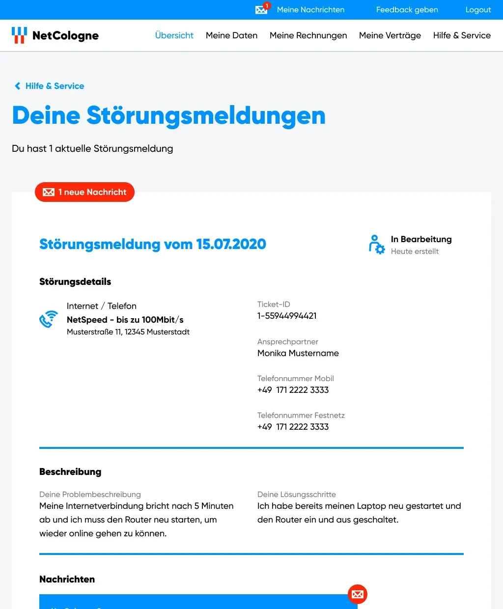

Give people a reason to come back
Self-service features turn a portal people have to use into one they want to use.
protected case study
This case study is password protected. Don't have the code? Email hi@annikagromig.com.
case study
Meine Kundenwelt, NetCologne
NetCologne is a leading regional internet provider based in Cologne, Germany, serving private and business customers. Its online customer service center, Meine Kundenwelt, is where customers manage their contracts, invoices and personal details.
I directed the UX design of the customer service center and later the company website, leading the design team in an agile sprint process. Along the way I built a design system that scaled across five breakpoints and backed every new feature with heat maps, surveys and user tests.
the challenge
Most customers log in to their internet provider for a handful of predictable reasons:
These tasks had to become faster and easier. But the bigger opportunity was to give customers new reasons to visit, and to let them solve problems online that used to need a phone call:
How do you turn a portal customers have to use into one they actually want to use?

my role
As lead of the design team, I was NetCologne's main design contact and owned the overall UX strategy. I translated business requirements into process flows, then took each feature through wireframes, prototypes, user tests and final UI, sprint by sprint, together with product owners and developers.
Three parts of the project show the range of the work best:
showcase 01 · design system
I have built several design systems over the years, and each one taught me the same lesson: every product has its own requirements, so its system should too. For NetCologne I aimed for a system that was straightforward to develop, had a distinct look and feel, and used subtle micro animations to make the portal more pleasant to use.
We defined five breakpoints and three sets of text styles for mobile, tablet and desktop, so type stays readable on every device and screen size.


Spacing was where we pushed the system furthest. We defined five unit sizes, from Tiny to XLarge, that grow or shrink automatically with the breakpoint. Designers only had to spec spacing on one screen, and developers could apply the same tokens everywhere.
Define spacing once, let every breakpoint do the math.

Every atom in the library comes with a description and definitions for all of its states and animations. A text link, for example, has a default, active, click and focus state, so nothing is left to interpretation during development.


showcase 02 · meine kundenwelt
The redesign went beyond a new look and better usability. It gave customers new ways to interact with NetCologne directly in the portal.
Editing personal details, downloading invoices and reviewing contracts are the reasons most people log in. Clear page structures, overlay dialogs for editing, and an invoice center that groups costs by product made these tasks quick to finish.
Personalized offers inside the portal let customers upgrade their contract in a few steps. For journeys like this, flows helped the whole team understand complex interactions before anything was built.

When the internet stops working, customers can now report a connection fault online, follow its status, and message the support team in one place. No hotline queue needed.

showcase 03 · research
To understand what customers really needed, research ran alongside design for the whole project:


When the pandemic moved everything online, so did our testing: we ran user tests remotely via Zoom, with participants clicking through InVision prototypes.

Every feature went live only after real customers had clicked through it.
the outcome
The new Meine Kundenwelt made everyday tasks faster and gave customers new reasons to log in, from personalized offers to reporting a fault online.
Self-service features turn a portal people have to use into one they want to use.
A unit system made five breakpoints manageable for designers and developers alike.
Heat maps, surveys and click dummies caught problems while they were still cheap to fix.
See every screen & flow
A visual-only collection of the portal pages, flows and design system from this project, all in one place.